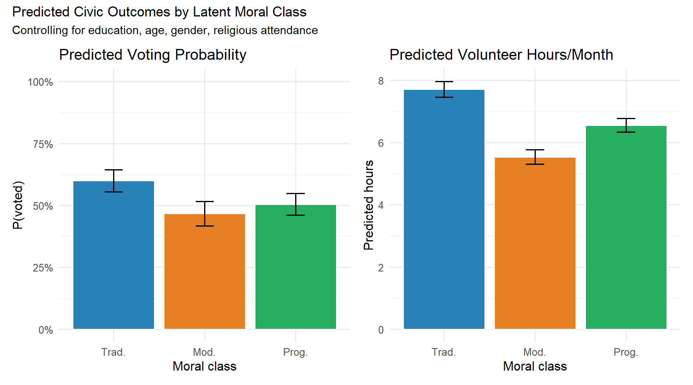
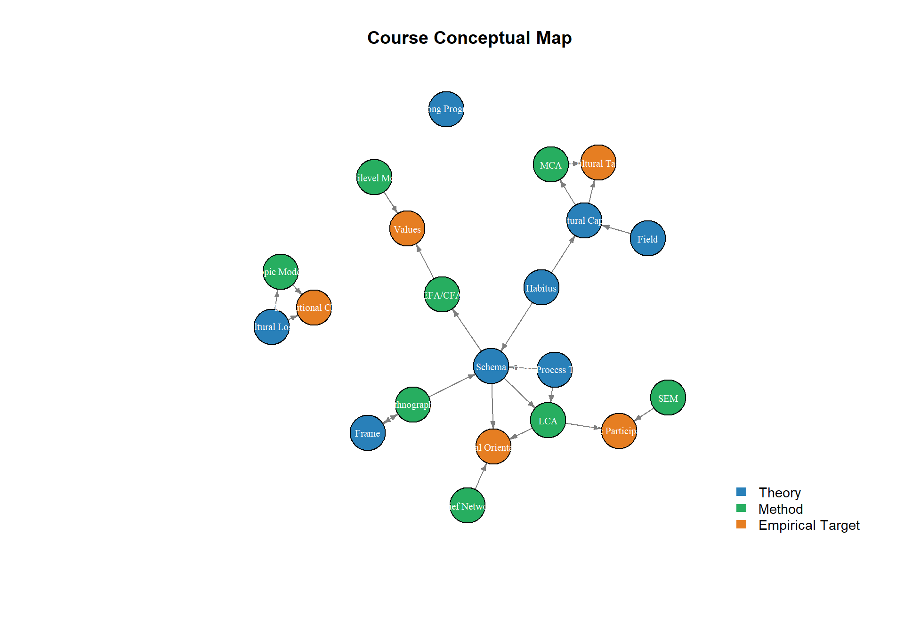

Week 1 Research Design Synthesis and Thesis Development
Week 15 | Synthesis + Assignment 4 Workshop
1.1 8.1 The Research Design Problem in Cultural Sociology
By this point in the course, students have been exposed to a range of theoretical constructs (habitus, schema, frame, logic, narrative) and a range of methods (MCA, LCA, EFA/CFA, SEM, multilevel regression, topic modeling, belief networks, qualitative coding). The synthesis problem is: how do these connect in a coherent research design?
The answer depends on the research question type. The table below maps question types to appropriate methods, with the key assumption that must hold for each method to be valid.
library(tidyverse)
library(kableExtra)
question_method_map <- tribble(
~question_type, ~method, ~core_assumption, ~cultural_soc_example,
"What types of cultural orientation exist?", "Latent Class Analysis (LCA)", "Latent categorical variable underlies response patterns", "Vaisey (2009): moral types in GSS",
"What are the dimensions of cultural variation?", "EFA / MCA", "Continuous latent dimensions; categorical (MCA) or continuous (EFA) indicators", "Bourdieu (1984): taste space via MCA",
"Does construct X predict outcome Y?", "OLS / logistic regression; SEM", "Adequate operationalization; correct functional form; X measured without error (SEM) or with (OLS)", "Vaisey & Lizardo (2010): worldviews → network composition",
"Does X cause Y (counterfactual)?", "Natural experiment; DiD; RD design", "Exogenous variation in X; SUTVA; parallel trends (DiD)", "Limited in cultural sociology; rare but see Acemoglu et al.",
"Are constructs equivalent across groups?", "Measurement invariance (CFA)", "Same factor structure across groups; loadings and intercepts equal (scalar invariance) for mean comparison", "Cross-national WVS comparisons",
"What is the content of schema X?", "Ethnography; in-depth interviews", "Practice is theory-laden; verbal reports access discursive culture", "Lamont (1992); Wacquant (2004)",
"How do schemas change over time?", "Panel data; computational text analysis; historical-comparative", "Change in observed indicators reflects change in latent construct (not just measurement drift)", "Kozlowski et al. (2019): word embeddings 1900–2000",
"What conditions produce outcome X?", "Qualitative Comparative Analysis (fsQCA)", "Equifinality; configurational causation; Boolean logic", "Smilde (2007): conditions for evangelical conversion"
)
question_method_map %>%
kable(
col.names = c("Research Question Type", "Primary Method", "Core Assumption",
"Cultural Soc. Example"),
caption = "Table 8.1: Research question types mapped to methods. Method selection is a theoretical act — it embeds assumptions about the nature of the construct and the causal claim."
) %>%
kable_styling(bootstrap_options = c("striped", "hover"), font_size = 12) %>%
column_spec(3, width = "18em") %>%
column_spec(4, width = "15em")| Research Question Type | Primary Method | Core Assumption | Cultural Soc. Example |
|---|---|---|---|
| What types of cultural orientation exist? | Latent Class Analysis (LCA) | Latent categorical variable underlies response patterns | Vaisey (2009): moral types in GSS |
| What are the dimensions of cultural variation? | EFA / MCA | Continuous latent dimensions; categorical (MCA) or continuous (EFA) indicators | Bourdieu (1984): taste space via MCA |
| Does construct X predict outcome Y? | OLS / logistic regression; SEM | Adequate operationalization; correct functional form; X measured without error (SEM) or with (OLS) | Vaisey & Lizardo (2010): worldviews → network composition |
| Does X cause Y (counterfactual)? | Natural experiment; DiD; RD design | Exogenous variation in X; SUTVA; parallel trends (DiD) | Limited in cultural sociology; rare but see Acemoglu et al. |
| Are constructs equivalent across groups? | Measurement invariance (CFA) | Same factor structure across groups; loadings and intercepts equal (scalar invariance) for mean comparison | Cross-national WVS comparisons |
| What is the content of schema X? | Ethnography; in-depth interviews | Practice is theory-laden; verbal reports access discursive culture | Lamont (1992); Wacquant (2004) |
| How do schemas change over time? | Panel data; computational text analysis; historical-comparative | Change in observed indicators reflects change in latent construct (not just measurement drift) | Kozlowski et al. (2019): word embeddings 1900–2000 |
| What conditions produce outcome X? | Qualitative Comparative Analysis (fsQCA) | Equifinality; configurational causation; Boolean logic | Smilde (2007): conditions for evangelical conversion |
1.2 8.2 Operationalization Audit
Before selecting a method, every cultural construct requires an operationalization audit — a structured assessment of how well the proposed measure captures the theoretical construct.
# Template for an operationalization audit
# Demonstrate with "cultural capital"
audit_template <- tribble(
~dimension, ~question, ~example_for_cult_cap,
"Conceptual breadth", "Does the theoretical construct have multiple components? Are all covered?", "Embodied (dispositions), objectified (goods), institutionalized (credentials). Most studies only measure the last.",
"Level of analysis", "At what level is the construct theorized? At what level is it measured?", "Embodied capital is individual + pre-reflective. Measured via survey = aggregated explicit report. Mismatch.",
"Indicator validity", "Do the proposed indicators tap the theoretical dimension?", "Education years = institutionalized capital. Arts attendance = partially embodied. Survey-based cultural knowledge tests (used by Dumais) = closer to embodied.",
"Indicator reliability", "Are indicators consistent in repeated measurement?", "Survey items for education: high reliability. Attendance items: medium (dependent on recall period).",
"Construct validity", "Does the construct behave as theorized in relation to other variables?", "Cultural capital should predict social advantage net of economic capital. Test: does it? Lamont (1992) shows cross-national variation unexplained by Bourdieu's model.",
"Discriminant validity", "Is this construct distinct from related constructs?", "Cultural capital vs. social capital: these are theoretically distinct but correlated. Do they have independent predictive power?",
"Measurement invariance", "Does the measure mean the same thing across groups being compared?", "Cross-national: 'attending classical concerts' may have different cultural field positions in France vs. US."
)
audit_template %>%
kable(
col.names = c("Dimension", "Diagnostic Question", "Example: Cultural Capital"),
caption = "Table 8.2: Operationalization audit template. Applied here to cultural capital."
) %>%
kable_styling(bootstrap_options = "striped", font_size = 12) %>%
column_spec(2:3, width = "20em")| Dimension | Diagnostic Question | Example: Cultural Capital |
|---|---|---|
| Conceptual breadth | Does the theoretical construct have multiple components? Are all covered? | Embodied (dispositions), objectified (goods), institutionalized (credentials). Most studies only measure the last. |
| Level of analysis | At what level is the construct theorized? At what level is it measured? | Embodied capital is individual + pre-reflective. Measured via survey = aggregated explicit report. Mismatch. |
| Indicator validity | Do the proposed indicators tap the theoretical dimension? | Education years = institutionalized capital. Arts attendance = partially embodied. Survey-based cultural knowledge tests (used by Dumais) = closer to embodied. |
| Indicator reliability | Are indicators consistent in repeated measurement? | Survey items for education: high reliability. Attendance items: medium (dependent on recall period). |
| Construct validity | Does the construct behave as theorized in relation to other variables? | Cultural capital should predict social advantage net of economic capital. Test: does it? Lamont (1992) shows cross-national variation unexplained by Bourdieu’s model. |
| Discriminant validity | Is this construct distinct from related constructs? | Cultural capital vs. social capital: these are theoretically distinct but correlated. Do they have independent predictive power? |
| Measurement invariance | Does the measure mean the same thing across groups being compared? | Cross-national: ‘attending classical concerts’ may have different cultural field positions in France vs. US. |
1.3 8.3 Pre-Registration as Research Discipline
Pre-registration — specifying hypotheses, sample, variables, and analytic plan before data collection or analysis — is increasingly standard in social science. It is not yet universal in cultural sociology, but it trains crucial habits:
- Separating confirmatory from exploratory inference: any analysis conducted after seeing the data is exploratory, regardless of the theoretical motivation. Only pre-specified analyses are confirmatory.
- Preventing HARKing (Hypothesizing After Results are Known): pre-registration creates a public record of what was predicted before what was found.
- Forcing precision: the act of writing a pre-registration reveals ambiguities in the research design that would otherwise survive until the results are known.
Pre-Registration Template (Assignment 3 format)
Students complete the following sections before running any analysis on their primary dataset:
- Theoretical framework: which constructs, defined how
- Research question and hypotheses (stated as directional predictions, not “we will examine”)
- Dataset and sampling: which dataset, which variables, what inclusion criteria
- Operationalization: indicator selection with justification; how are missing values handled
- Analytic plan: specific models, in what order, with what comparison criteria
- Robustness checks: which specification alternatives will be tested
- Expected limitations
After the pre-registration is submitted, students run their analysis. Deviations from the pre-registered plan must be disclosed and justified.
1.4 Lab 8: Full Research Pipeline Demonstration
This final lab runs a complete research pipeline from a theoretically motivated question through data, analysis, and interpretation. We use GSS-structure data (Chapter 4) extended with behavioral outcomes and demographic covariates.
Research question: Does latent moral orientation (as identified by LCA) predict civic participation, net of education and religious attendance? This replicates the Vaisey (2009) logic with a civic participation outcome.
library(poLCA)
library(nnet)
set.seed(20240109)
# ─────────────────────────────────────────────────────────────
# Extend GSS-structure dataset from Chapter 4 with outcomes
# and covariates
# ─────────────────────────────────────────────────────────────
n <- 1500
# Latent moral class (reproducing Chapter 4 structure)
true_class <- sample(c(1, 2, 3), n,
replace = TRUE, prob = c(0.35, 0.38, 0.27))
item_by_class <- function(class_vec, p1, p2, p3, levels = 1:4) {
out <- integer(length(class_vec))
out[class_vec == 1] <- sample(levels, sum(class_vec == 1), replace = TRUE, prob = p1)
out[class_vec == 2] <- sample(levels, sum(class_vec == 2), replace = TRUE, prob = p2)
out[class_vec == 3] <- sample(levels, sum(class_vec == 3), replace = TRUE, prob = p3)
out
}
pipeline_df <- tibble(
true_class,
ABANY = item_by_class(true_class, c(.80,.12,.05,.03), c(.30,.25,.25,.20), c(.05,.10,.20,.65)),
PREMARSX = item_by_class(true_class, c(.75,.15,.07,.03), c(.20,.25,.30,.25), c(.03,.07,.20,.70)),
XMARSEX = item_by_class(true_class, c(.90,.07,.02,.01), c(.70,.18,.08,.04), c(.55,.25,.12,.08)),
HOMOSEX = item_by_class(true_class, c(.82,.10,.05,.03), c(.25,.22,.25,.28), c(.04,.06,.15,.75)),
BIBLE = item_by_class(true_class, c(.70,.22,.08), c(.20,.50,.30), c(.05,.30,.65), 1:3),
PRAY = item_by_class(true_class, c(.70,.22,.08), c(.25,.45,.30), c(.08,.25,.67), 1:3),
# Covariates
educ = round(rnorm(n, 14, 3)), # years of education
age = round(rnorm(n, 45, 15)),
female = rbinom(n, 1, 0.52),
attend = item_by_class(true_class, c(.65,.22,.13), c(.30,.35,.35), c(.10,.25,.65), 1:3),
# Outcomes (caused by true_class + covariates)
# Voted in last election
voted = rbinom(n, 1,
plogis(-0.5 +
0.8 * (true_class == 1) + # traditionalists vote more
0.2 * (true_class == 2) +
0.05 * educ +
-0.01 * age +
0.3 * rnorm(n))),
# Volunteer hours per month (count — using negative binomial logic → Poisson approx)
volunteer = rpois(n,
exp(0.5 +
0.4 * (true_class == 1) +
0.2 * (true_class == 2) +
0.08 * educ +
0.3 * rnorm(n)))
)
cat("Full pipeline dataset: N =", nrow(pipeline_df), "\n")## Full pipeline dataset: N = 1500## Outcomes: voted (binary), volunteer (count)# Step 1: Run LCA to recover latent classes (as if true class unknown)
formula_moral <- cbind(ABANY, PREMARSX, XMARSEX, HOMOSEX, BIBLE, PRAY) ~ 1
lca_final <- poLCA(formula_moral,
pipeline_df %>% dplyr::select(ABANY:PRAY),
nclass = 3,
verbose = FALSE,
maxiter = 3000,
nrep = 20)
pipeline_df$lca_class <- lca_final$predclass
cat("LCA class sizes (%):", round(lca_final$P * 100, 1), "\n")## LCA class sizes (%): 36 28.8 35.1# Check correspondence with true classes (in real research: unknowable)
cat("\nCross-tab: LCA class × True class (research validation check):\n")##
## Cross-tab: LCA class × True class (research validation check):##
## 1 2 3
## 1 496 48 0
## 2 0 87 347
## 3 50 413 59# Step 2: Logistic regression: voted ~ LCA class + controls
# IMPORTANT: This uses modal class assignment (biased; BCH needed for unbiased)
# We note this limitation explicitly
pipeline_df <- pipeline_df %>%
mutate(lca_class_f = factor(lca_class, labels = c("Trad.", "Mod.", "Prog.")))
# Bivariate: class → voted
m_bivar <- glm(voted ~ lca_class_f, data = pipeline_df, family = binomial)
# Full model: class + controls
m_full <- glm(voted ~ lca_class_f + educ + age + female + attend,
data = pipeline_df, family = binomial)
# Model comparison
broom::tidy(m_full, conf.int = TRUE, exponentiate = TRUE) %>%
filter(term != "(Intercept)") %>%
mutate(across(c(estimate, conf.low, conf.high), ~ round(., 3)),
p.value = round(p.value, 4)) %>%
kable(
col.names = c("Term", "OR", "SE", "z", "p", "CI low", "CI high"),
caption = "Table 8.3: Logistic regression (OR): voted ~ LCA class + controls. Reference class = Traditionalist. Note: modal class assignment introduces downward bias in class coefficient estimates."
) %>%
kable_styling(bootstrap_options = "striped", font_size = 13)| Term | OR | SE | z | p | CI low | CI high |
|---|---|---|---|---|---|---|
| lca_class_fMod. | 0.585 | 0.1452311 | -3.6951382 | 0.0002 | 0.440 | 0.777 |
| lca_class_fProg. | 0.681 | 0.1311263 | -2.9295988 | 0.0034 | 0.526 | 0.880 |
| educ | 1.092 | 0.0178956 | 4.9402004 | 0.0000 | 1.055 | 1.132 |
| age | 0.985 | 0.0037117 | -4.0738916 | 0.0000 | 0.978 | 0.992 |
| female | 0.945 | 0.1061750 | -0.5370623 | 0.5912 | 0.767 | 1.163 |
| attend | 0.870 | 0.0692981 | -2.0025591 | 0.0452 | 0.760 | 0.997 |
# Step 3: Poisson regression: volunteer hours ~ LCA class + controls
m_volunt <- glm(volunteer ~ lca_class_f + educ + age + female + attend,
data = pipeline_df, family = poisson)
broom::tidy(m_volunt, conf.int = TRUE, exponentiate = TRUE) %>%
filter(term != "(Intercept)") %>%
mutate(across(c(estimate, conf.low, conf.high), ~ round(., 3)),
p.value = round(p.value, 4)) %>%
kable(
col.names = c("Term", "IRR", "SE", "z", "p", "CI low", "CI high"),
caption = "Table 8.4: Poisson regression (IRR): volunteer hours ~ LCA class + controls. IRR = Incidence Rate Ratio (multiplicative effect on volunteer hours)."
) %>%
kable_styling(bootstrap_options = "striped", font_size = 13)| Term | IRR | SE | z | p | CI low | CI high |
|---|---|---|---|---|---|---|
| lca_class_fMod. | 0.718 | 0.0278218 | -11.9084359 | 0.0000 | 0.680 | 0.758 |
| lca_class_fProg. | 0.850 | 0.0235400 | -6.8963199 | 0.0000 | 0.812 | 0.890 |
| educ | 1.079 | 0.0032442 | 23.3485884 | 0.0000 | 1.072 | 1.086 |
| age | 1.000 | 0.0006823 | -0.4841307 | 0.6283 | 0.998 | 1.001 |
| female | 1.002 | 0.0197353 | 0.1200717 | 0.9044 | 0.964 | 1.042 |
| attend | 0.959 | 0.0128927 | -3.2793424 | 0.0010 | 0.935 | 0.983 |
library(patchwork)
# Predicted probabilities: voted
newdata_voted <- expand_grid(
lca_class_f = factor(c("Trad.", "Mod.", "Prog."), levels = c("Trad.", "Mod.", "Prog.")),
educ = mean(pipeline_df$educ),
age = mean(pipeline_df$age),
female = 0.52,
attend = 2
)
pp_voted <- predict(m_full, newdata = newdata_voted, type = "response", se.fit = TRUE)
newdata_voted$pred <- pp_voted$fit
newdata_voted$se <- pp_voted$se.fit
p1 <- ggplot(newdata_voted, aes(x = lca_class_f, y = pred,
fill = lca_class_f)) +
geom_col(color = "white") +
geom_errorbar(aes(ymin = pred - 1.96 * se, ymax = pred + 1.96 * se),
width = 0.2) +
scale_y_continuous(labels = scales::percent_format(), limits = c(0, 1)) +
scale_fill_manual(values = c("#2980b9", "#e67e22", "#27ae60")) +
labs(title = "Predicted Voting Probability", x = "Moral class", y = "P(voted)",
fill = NULL) +
theme_minimal(base_size = 12) +
theme(legend.position = "none")
# Predicted volunteer hours
pp_vol <- predict(m_volunt, newdata = newdata_voted, type = "response", se.fit = TRUE)
newdata_voted$pred_vol <- pp_vol$fit
newdata_voted$se_vol <- pp_vol$se.fit
p2 <- ggplot(newdata_voted, aes(x = lca_class_f, y = pred_vol,
fill = lca_class_f)) +
geom_col(color = "white") +
geom_errorbar(aes(ymin = pred_vol - 1.96 * se_vol,
ymax = pred_vol + 1.96 * se_vol), width = 0.2) +
scale_fill_manual(values = c("#2980b9", "#e67e22", "#27ae60")) +
labs(title = "Predicted Volunteer Hours/Month",
x = "Moral class", y = "Predicted hours", fill = NULL) +
theme_minimal(base_size = 12) +
theme(legend.position = "none")
p1 + p2 + plot_annotation(
title = "Predicted Civic Outcomes by Latent Moral Class",
subtitle = "Controlling for education, age, gender, religious attendance"
)
Figure 1.1: Figure 8.1: Predicted civic outcomes by LCA class, controlling for education, age, gender, and religious attendance. Error bars = 95% CI. Traditionalists show higher voting probability but not consistently higher volunteering — a finding with theoretical implications for models that predict uniform civic engagement by moral orientation.
1.5 8.4 Thesis and Doctoral Development: Extending the Course Work
From course paper to thesis/PhD chapter.
The research design paper (Assignment 4) can become the first chapter of an MA thesis or a doctoral dissertation chapter if it:
Identifies a gap that is genuinely consequential — not just “no study has done X” but “the absence of X leaves a significant theoretical problem unresolved.”
Proposes a feasible empirical contribution given available data and methods. Ambition should be bounded by what can be executed with appropriate rigor.
Situates itself within one clear conversation in the literature — not three conversations at once. The contribution is sharpest when the paper knows exactly which debate it is entering.
Has a falsifiable claim — either a prediction that could be wrong, or an analytical framework that produces determinate implications for the data.
High-priority underdeveloped areas in cultural and cognitive sociology (as of 2024) — productive for thesis development:
| Area | Why underdeveloped | Methodological entry point |
|---|---|---|
| Cross-cultural measurement of implicit culture | Surveys measure explicit; implicit culture is underoperationalized cross-culturally | Vignette experiments + LCA; implicit association paradigms |
| Longitudinal schema stability | LCA is cross-sectional; how do moral types change over the life course? | Latent Transition Analysis (LTA) on panel data |
| Institutional logics at individual level | Multi-level assumption rarely tested | Multilevel LCA; MSEM |
| Cultural omnivorousness in digital consumption | Digital taste (Spotify, streaming) poorly integrated with field theory | Behavioral data + MCA |
| Schema activation vs. schema possession | Having a schema ≠ activating it; context effects undertheorized | Experimental vignette designs |
| Narrative measurement at scale | Narrative analysis has been qualitative; computational narrative detection is nascent | STM topic models with narrative sequence coding |
1.6 8.5 Final Session: Peer Design Review Protocol
review_rubric <- tribble(
~dimension, ~criteria, ~weight,
"Theoretical clarity", "Is the construct clearly defined? Is its relation to existing literature explicit?", "20%",
"Research question", "Is the question specific, feasible, and consequential? Is it answerable with the proposed data/method?", "20%",
"Operationalization", "Are indicators justified theoretically? Are limitations acknowledged?", "20%",
"Method-question fit", "Does the method match the research question type? Are assumptions stated?", "20%",
"Anticipated limitations","Are threats to validity acknowledged (measurement, endogeneity, scope)?", "10%",
"Development potential", "Can this design be extended to a thesis/PhD? Is the contribution clear?", "10%"
)
review_rubric %>%
kable(
col.names = c("Dimension", "Criteria", "Weight"),
caption = "Table 8.5: Peer design review rubric for Assignment 4 workshop"
) %>%
kable_styling(bootstrap_options = "striped", font_size = 13) %>%
column_spec(2, width = "30em")| Dimension | Criteria | Weight |
|---|---|---|
| Theoretical clarity | Is the construct clearly defined? Is its relation to existing literature explicit? | 20% |
| Research question | Is the question specific, feasible, and consequential? Is it answerable with the proposed data/method? | 20% |
| Operationalization | Are indicators justified theoretically? Are limitations acknowledged? | 20% |
| Method-question fit | Does the method match the research question type? Are assumptions stated? | 20% |
| Anticipated limitations | Are threats to validity acknowledged (measurement, endogeneity, scope)? | 10% |
| Development potential | Can this design be extended to a thesis/PhD? Is the contribution clear? | 10% |
Assignment 4: Research Design Paper
Assignment 4 — Research Design Paper (Due Week 15)
Length: 7,000–10,000 words (not including references and code appendix)
Structure:
I. Introduction (~500 words)
State the research question. Explain why it matters theoretically.
Identify which debate in the literature this enters.
II. Theoretical Framework (~1,500 words)
Specify the construct(s) studied. Define them rigorously.
State your theoretical claims as testable implications.
III. Prior Empirical Research (~1,000 words)
What has been done? What is missing or contested?
IV. Data (~500 words)
Which dataset? Why is it appropriate? What are its limitations?
V. Operationalization (~800 words)
Which variables map to which constructs? Justify each choice.
State how missing data are handled.
VI. Analytic Plan (~1,000 words)
Specify the models. Explain the sequence. State what would confirm
and what would disconfirm each hypothesis.
VII. Preliminary Results (~1,000 words)
Present preliminary analysis (descriptives + one primary model).
Interpret in light of your theoretical framework.
VIII. Discussion and Limitations (~1,000 words)
What do the results mean? What cannot be concluded?
What are the three most serious threats to validity?
IX. Future Directions (~500 words)
How could this become a full thesis? What additional data or
methods would be needed?
Appendix: R Markdown document with all code, fully reproducible.
Evaluation: Use the rubric in Table 8.5.
1.7 Course Wrap: Connections Across All Modules
library(igraph)
# Build course concept network
nodes <- data.frame(
name = c(
# Theory nodes
"Habitus", "Field", "Cultural Capital",
"Schema", "Frame", "Cultural Logic",
"Dual-Process Theory", "Strong Program",
# Methods nodes
"MCA", "LCA", "EFA/CFA", "SEM",
"Multilevel Models", "Topic Models",
"Belief Networks", "Ethnography",
# Empirical targets
"Cultural Taste", "Moral Orientation",
"Values", "Civic Participation",
"Institutional Change"
),
type = c(
rep("Theory", 8),
rep("Method", 8),
rep("Empirical Target", 5)
)
)
edges <- data.frame(from = c(
"Habitus", "Habitus", "Field", "Cultural Capital",
"Schema", "Schema", "Frame", "Cultural Logic",
"Dual-Process Theory", "Dual-Process Theory",
"MCA", "LCA", "LCA", "EFA/CFA", "SEM",
"Multilevel Models", "Topic Models", "Belief Networks",
"Ethnography", "Ethnography",
"Cultural Capital", "Schema", "Cultural Logic"
), to = c(
"Cultural Capital", "Schema", "Cultural Capital",
"MCA", "LCA", "EFA/CFA", "Ethnography",
"Topic Models",
"LCA", "Schema",
"Cultural Taste", "Moral Orientation", "Civic Participation",
"Values", "Civic Participation",
"Values", "Institutional Change", "Moral Orientation",
"Schema", "Frame",
"Cultural Taste", "Moral Orientation", "Institutional Change"
))
g <- graph_from_data_frame(edges, vertices = nodes, directed = TRUE)
colors <- c("Theory" = "#2980b9", "Method" = "#27ae60", "Empirical Target" = "#e67e22")
V(g)$color <- colors[V(g)$type]
plot(
g,
vertex.color = V(g)$color,
vertex.label.color = "white",
vertex.label.cex = 0.65,
vertex.size = 18,
edge.arrow.size = 0.4,
edge.color = "grey50",
layout = layout_with_fr(g),
main = "Course Conceptual Map"
)
legend("bottomright",
legend = names(colors),
fill = colors,
border = NA,
bty = "n",
cex = 0.9)
Figure 1.2: Figure 8.2: Course conceptual map. Arrows indicate the primary theoretical and methodological connections developed across the fifteen weeks. The central claim of the course: method selection and operationalization decisions are embedded in theoretical assumptions, and these assumptions must be made explicit.
Core Readings
- King, G., Keohane, R. O., & Verba, S. (1994). Designing Social Inquiry. Princeton University Press. Chapters 1–3.
- Brady, H. E., & Collier, D. (Eds.) (2010). Rethinking Social Inquiry. Rowman & Littlefield. Part I.
- Gerber, A. S., & Green, D. P. (2012). Field Experiments. Norton. Chapter 1. [Causal inference standard]
- Mohr, J. W., et al. (2020). Measuring Culture. Columbia University Press. Conclusion.
- Lamont, M., & Swidler, A. (2014). Methodological Pluralism and the Possibilities and Limits of Interviewing. Qualitative Sociology, 37(2), 153–171.
- Open Science Framework Pre-Registration Templates: osf.io/prereg
## R version 4.5.3 (2026-03-11 ucrt)
## Platform: x86_64-w64-mingw32/x64
## Running under: Windows 11 x64 (build 26200)
##
## Matrix products: default
## LAPACK version 3.12.1
##
## locale:
## [1] LC_COLLATE=English_Israel.utf8 LC_CTYPE=English_Israel.utf8
## [3] LC_MONETARY=English_Israel.utf8 LC_NUMERIC=C
## [5] LC_TIME=English_Israel.utf8
##
## time zone: Asia/Jerusalem
## tzcode source: internal
##
## attached base packages:
## [1] stats graphics grDevices utils datasets methods base
##
## other attached packages:
## [1] nnet_7.3-20 qgraph_1.9.8 igraph_2.2.2
## [4] topicmodels_0.2-17 tidytext_0.4.3 car_3.1-5
## [7] carData_3.0-6 lmerTest_3.2-1 lme4_2.0-1
## [10] Matrix_1.7-4 lavaanPlot_0.8.1 semPlot_1.1.8
## [13] poLCA_1.6.0.2 MASS_7.3-65 scatterplot3d_0.3-45
## [16] semTools_0.5-8 lavaan_0.6-21 GPArotation_2025.3-1
## [19] psych_2.6.3 patchwork_1.3.2 factoextra_2.0.0
## [22] FactoMineR_2.13 ggrepel_0.9.8 kableExtra_1.4.0
## [25] lubridate_1.9.5 forcats_1.0.1 stringr_1.6.0
## [28] dplyr_1.2.0 purrr_1.2.1 readr_2.2.0
## [31] tidyr_1.3.2 tibble_3.3.1 ggplot2_4.0.2
## [34] tidyverse_2.0.0 rmarkdown_2.31
##
## loaded via a namespace (and not attached):
## [1] splines_4.5.3 later_1.4.8 XML_3.99-0.23
## [4] rpart_4.1.24 lifecycle_1.0.5 Rdpack_2.6.6
## [7] rstatix_0.7.3 NLP_0.3-2 lattice_0.22-9
## [10] flashClust_1.1-4 SnowballC_0.7.1 rockchalk_1.8.157
## [13] backports_1.5.0 magrittr_2.0.4 openxlsx_4.2.8.1
## [16] Hmisc_5.2-5 sass_0.4.10 jquerylib_0.1.4
## [19] yaml_2.3.12 httpuv_1.6.17 otel_0.2.0
## [22] skimr_2.2.2 zip_2.3.3 pbapply_1.7-4
## [25] minqa_1.2.8 RColorBrewer_1.1-3 multcomp_1.4-30
## [28] abind_1.4-8 quadprog_1.5-8 TH.data_1.1-5
## [31] sandwich_3.1-1 tm_0.7-18 tokenizers_0.3.0
## [34] arm_1.15-2 svglite_2.2.2 codetools_0.2-20
## [37] DT_0.34.0 xml2_1.5.2 tidyselect_1.2.1
## [40] farver_2.1.2 stats4_4.5.3 base64enc_0.1-6
## [43] jsonlite_2.0.0 Formula_1.2-5 survival_3.8-6
## [46] emmeans_2.0.2 systemfonts_1.3.2 tools_4.5.3
## [49] Rcpp_1.1.1 glue_1.8.0 mnormt_2.1.2
## [52] gridExtra_2.3 xfun_0.57 numDeriv_2016.8-1.1
## [55] withr_3.0.2 fastmap_1.2.0 boot_1.3-32
## [58] digest_0.6.39 mi_1.2 timechange_0.4.0
## [61] R6_2.6.1 mime_0.13 estimability_1.5.1
## [64] textshaping_1.0.5 colorspace_2.1-2 ClaudeR_0.2.0
## [67] gtools_3.9.5 jpeg_0.1-11 DiagrammeR_1.0.11
## [70] utf8_1.2.6 generics_0.1.4 data.table_1.18.2.1
## [73] corpcor_1.6.10 htmlwidgets_1.6.4 pkgconfig_2.0.3
## [76] sem_3.1-16 gtable_0.3.6 modeltools_0.2-24
## [79] S7_0.2.1 janeaustenr_1.0.0 htmltools_0.5.9
## [82] bookdown_0.46 multcompView_0.1-11 scales_1.4.0
## [85] leaps_3.2 png_0.1-9 reformulas_0.4.4
## [88] knitr_1.51 rstudioapi_0.18.0 tzdb_0.5.0
## [91] reshape2_1.4.5 visNetwork_2.1.4 coda_0.19-4.1
## [94] checkmate_2.3.4 nlme_3.1-168 nloptr_2.2.1
## [97] repr_1.1.7 cachem_1.1.0 zoo_1.8-15
## [100] parallel_4.5.3 miniUI_0.1.2 foreign_0.8-91
## [103] pillar_1.11.1 grid_4.5.3 vctrs_0.7.2
## [106] slam_0.1-55 promises_1.5.0 ggpubr_0.6.3
## [109] OpenMx_2.22.11 xtable_1.8-8 cluster_2.1.8.2
## [112] htmlTable_2.4.3 evaluate_1.0.5 pbivnorm_0.6.0
## [115] mvtnorm_1.3-6 cli_3.6.5 kutils_1.73
## [118] compiler_4.5.3 rlang_1.1.7 ggsignif_0.6.4
## [121] labeling_0.4.3 fdrtool_1.2.18 plyr_1.8.9
## [124] stringi_1.8.7 viridisLite_0.4.3 lisrelToR_0.3
## [127] hms_1.1.4 glasso_1.11 shiny_1.13.0
## [130] rbibutils_2.4.1 broom_1.0.12 RcppParallel_5.1.11-2
## [133] bslib_0.10.0